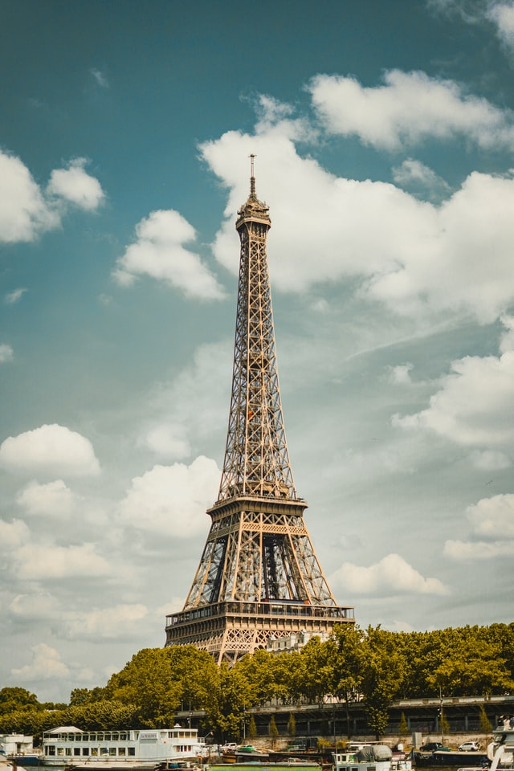

Paris’in görkemli demir kulesi. Tüm dünyada Fransa’nın sembolü olarak kabul edilir. Fransız Devriminin 100. Yıl kutlamaları zamanında Dünya Fuarının kapısı olması için tasarlanmıştır.

La Tour Eiffel, Nazım Hikmet onu zürafaya benzetirken, Bedri Rahmi Eyüboğlu onu Galata Kulesi ile evlendirmek istemiş. O yılların birçok edebiyatçısı ve sanatçısı onu bir “demir yığını” olarak gördükleri için kaldırılması için kampanya bile düzenlemişlerdi.
20 yıl kalması ve sonra kaldırılması planlanan Eyfel Kulesi, dünyanın ilgisi çekmesi ve çok fazla turist ağırlamasıyla bir ömür kalmayı başarabilmiştir. Sadece görsel bir şölen değil aynı zamanda radyo vericisi olarak da kullanılmaktadır.